Nouvelles ressources
Mes nouvelles fiches apparaissent ici en premier. La liste se met à jour automatiquement.
48 ressources

Lac Baïkal – Fiche CM1-CM2 : texte à trous, compréhension orale et mots mêlés

Iroquois – Fiche CM1-CM2 : texte à trous, compréhension orale et mots mêlés

Ichthyosauria – Fiche CM1-CM2 : texte à trous, compréhension orale et mots mêlés

Ice – Fiche CM1-CM2 : texte à trous, compréhension orale et mots mêlés

Hoquet – Fiche CM1-CM2 : texte à trous, compréhension orale et mots mêlés

Géocaching – Fiche CM1-CM2 : texte à trous, compréhension orale et mots mêlés

Fée – Fiche CM1-CM2 : texte à trous, compréhension orale et mots mêlés

Empreinte digitale – Fiche CM1-CM2 : texte à trous, compréhension orale et mots mêlés

Empereur – Fiche CM1-CM2 : texte à trous, compréhension orale et mots mêlés

Eidgenossenschaft – Fiche CM1-CM2 : texte à trous, compréhension orale et mots mêlés

Dune – Fiche CM1-CM2 : texte à trous, compréhension orale et mots mêlés

Cigarette électronique – Fiche : texte à trous, compréhension orale et mots mêlés

Chevalier – Fiche : texte à trous, compréhension orale et mots mêlés

Caramel – Fiche : texte à trous, compréhension orale et mots mêlés

Brunei – Fiche : texte à trous, compréhension orale et mots mêlés

Bruges – Fiche : texte à trous, compréhension orale et mots mêlés
Saint-Paul
Saint-Paul – Fiche : texte à trous, compréhension orale et mots mêlés

Bretzel – Fiche : texte à trous, compréhension orale et mots mêlés

Botte en caoutchouc – Fiche : texte à trous, compréhension orale et mots mêlés

Blues – Fiche : texte à trous, compréhension orale et mots mêlés

Bière – Fiche : texte à trous, compréhension orale et mots mêlés

Bengali – Fiche : texte à trous, compréhension orale et mots mêlés

Baseball – Fiche : texte à trous, compréhension orale et mots mêlés

Baiser – Fiche : texte à trous, compréhension orale et mots mêlés

Guépard – Fiche : texte à trous, compréhension orale et mots mêlés

Œil – Fiche : texte à trous, compréhension orale et mots mêlés

Union des républiques socialistes soviétiques – Fiche : texte à trous, compréhension orale et mots mêlés
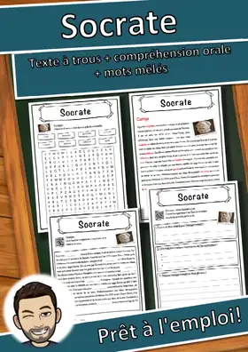
Socrate – Fiche : texte à trous, compréhension orale et mots mêlés
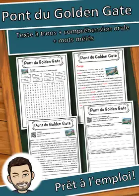
Pont du Golden Gate – Fiche : texte à trous, compréhension orale et mots mêlés
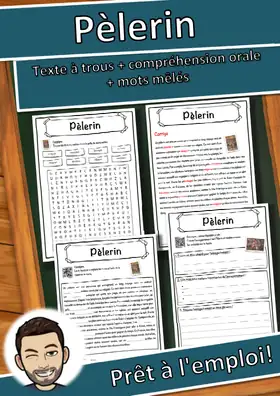
Pèlerin – Fiche : texte à trous, compréhension orale et mots mêlés
Osmium – Fiche : texte à trous, compréhension orale et mots mêlés
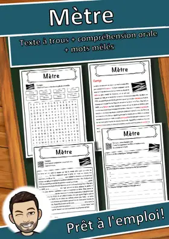
Mètre – Fiche : texte à trous, compréhension orale et mots mêlés
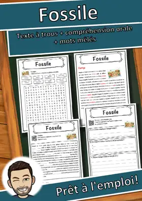
Fossile – Fiche : texte à trous, compréhension orale et mots mêlés
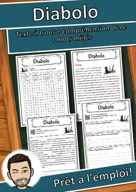
Diabolo – Fiche : texte à trous, compréhension orale et mots mêlés
Dalaï-lama – Fiche : texte à trous, compréhension orale et mots mêlés
Cuir – Fiche : texte à trous, compréhension orale et mots mêlés
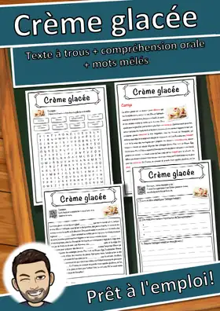
Crème glacée – Fiche : texte à trous, compréhension orale et mots mêlés
Conservatisme – Fiche : texte à trous, compréhension orale et mots mêlés
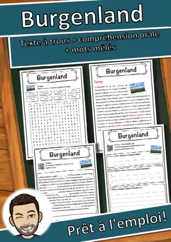
Burgenland – Fiche : texte à trous, compréhension orale et mots mêlés
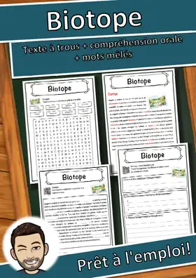
Biotope – Fiche : texte à trous, compréhension orale et mots mêlés
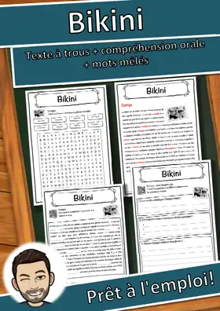
Bikini – Fiche : texte à trous, compréhension orale et mots mêlés
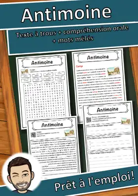
Antimoine – Fiche : texte à trous, compréhension orale et mots mêlés

Électronique – Fiche : texte à trous, compréhension orale et mots mêlés

Vienne – Fiche : texte à trous, compréhension orale et mots mêlés

Blason – Fiche : texte à trous, compréhension orale et mots mêlés

Télégraphie – Fiche : texte à trous, compréhension orale et mots mêlés

Tantale – Fiche : texte à trous, compréhension orale et mots mêlés

Sainte-Sophie – Fiche : texte à trous, compréhension orale et mots mêlés
Aucune ressource trouvée – essaie un autre mot ou un autre filtre.